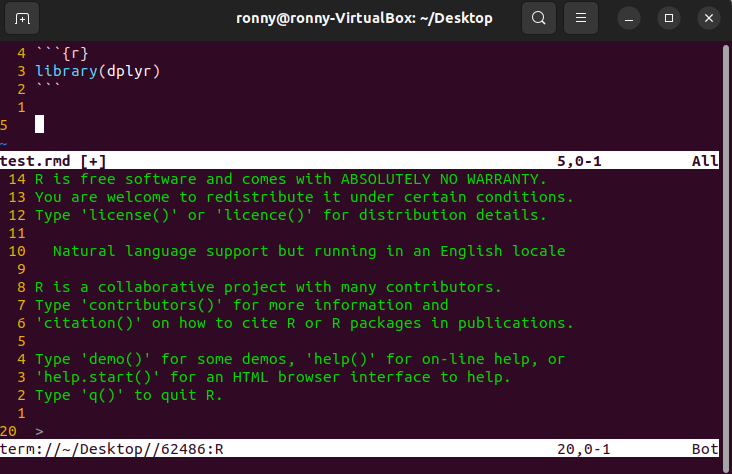
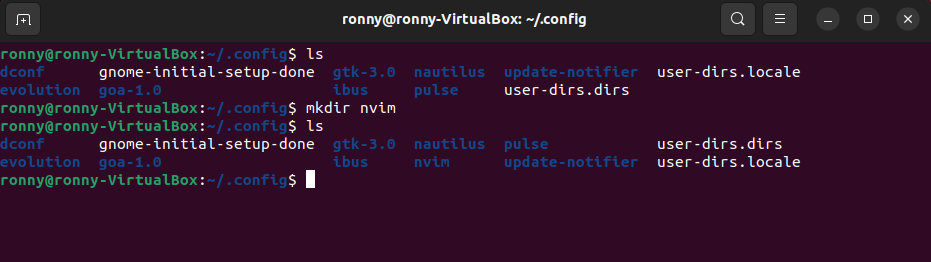
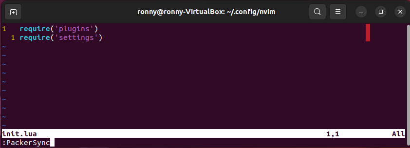
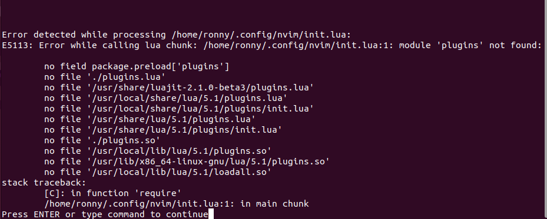
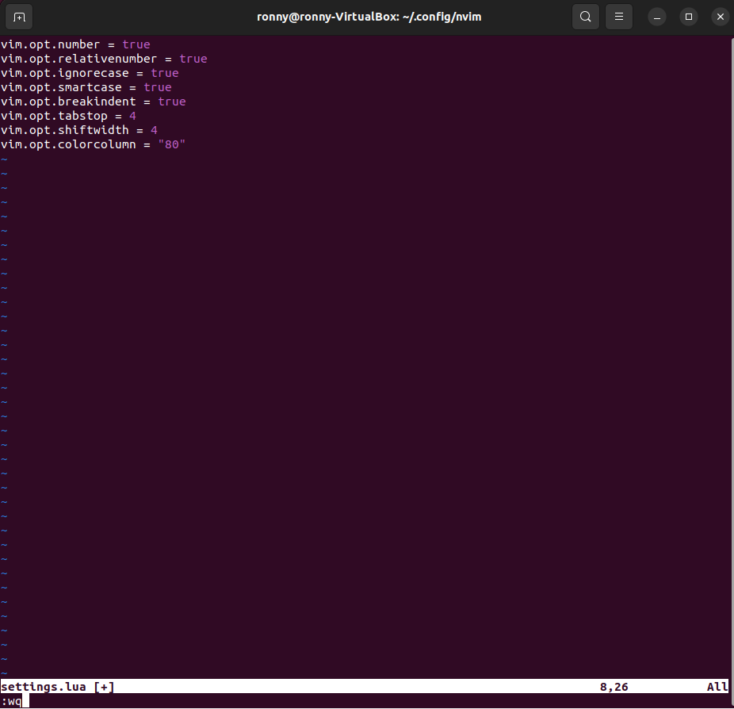
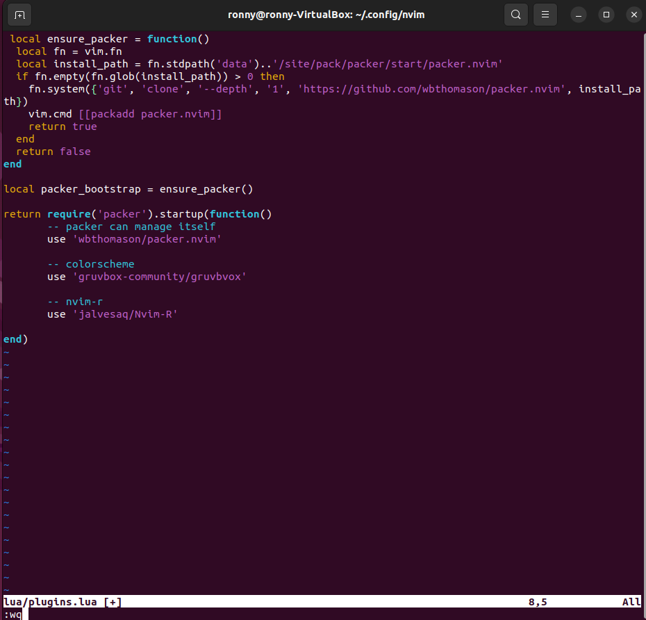
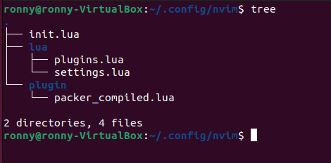
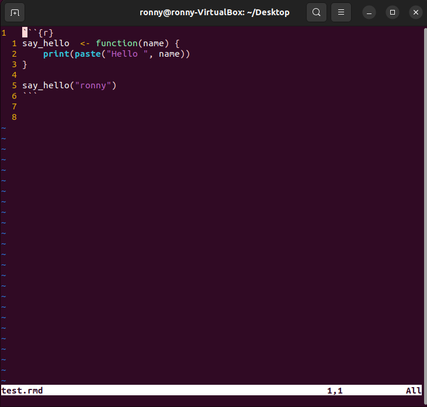
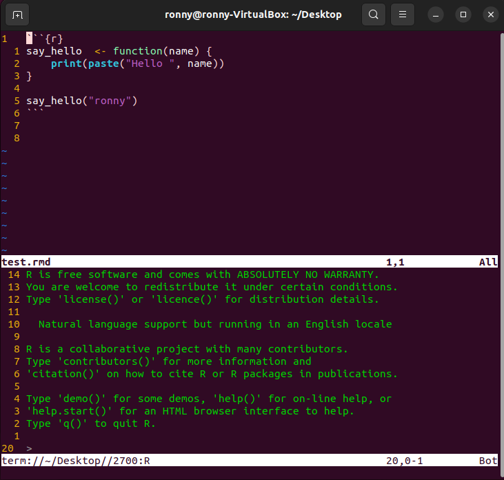
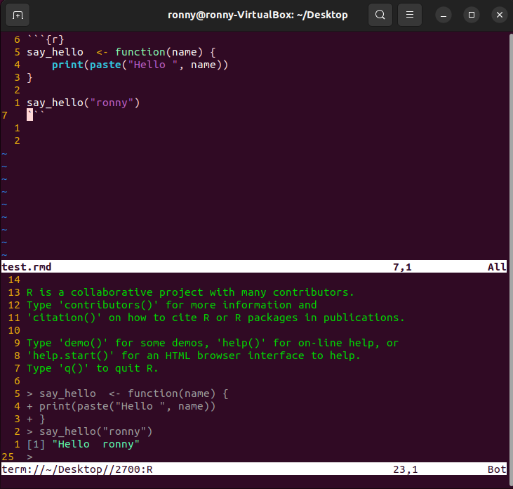

![]()
What are we going to do?
In this blogpost, I will guide you through the process of installing Neovim on Ubuntu 22.04, configuring it with Lua, and using Packer as a plugin manager. Our goal is to create an optimized setup that allows for smooth R programming from the terminal.
If you have previously read my blogposts, you might be familiar with the configuration using vim-plug for managing plugins. However, in this blogpost, we will take a different approach by utilizing Lua for our Neovim configuration and Packer for plugin management. Lua provides a more organized and flexible way to configure Neovim, while Packer simplifies the installation and management of plugins.
Let’s get started with the installation and configuration process. If you are familiar with some of the steps, feel free to jump ahead to the specific sections you need.
By the end of this tutorial, you will have a customized Neovim setup that enhances your R programming experience and boosts your productivity.
Our results will be something similar to:

On next blogposts, I will describe how to take this further.
Installation and configuration
So, we need some software for this. Make sure that you have git installed on your workstation and of course, R.
Files structure
We aim to have the following configuration files structure:
In the directory ~/.config/nvim, we should have:
| - init.lua (Entry point for nvim)
|
| - lua/
| - plugins.lua (For our packer plugins installations)
| - settings.lua (Our general nvim configuration)
|
| - plugin/
| - plugin_a.lua (Configurations for a determined plugin)
| - plugin_b.lua (Configurations for a determined plugin)
| - packer_compiled.lua (File generated automatically by Packer)This is not mandatory, but is one of the configurations that I find really nice to organize everything being specific on the aim of the instructions.
Installing Neovim
- Open your terminal
- Run the following command:
Configuring our nvim with lua
- Create the config directory for nvim:
Remember to replace user_name with your actual workstation user name.

.config- Create the
init.luafile:
- Add the following requirements:
 These requirements reference the files that we are about to create: plugins.lua and settings.lua. Both files should be placed in the lua/ directory.
The init.lua file acts as the entry point for loading the settings and plugins. If you make changes to the plugins, such as adding a new one, you can revisit the init.lua file and invoke :PackerSync to synchronize the plugins. However, for now, you don’t need to worry about this step.
Configuring General Settings for Lua
After creating our init.lua file, it’s time to configure the general settings to customize the behavior of the nvim editor according to our preferred style.
To organize these settings effectively, we will utilize the lua/settings.lua file. This file will serve as a central location for all our general settings.
To set up the lua/settings.lua file, follow these steps:
- Create the
lua/directory inside thenvim/directory if it doesn’t already exist:
- Create the settings.lua file within the lua/ directory.
Make sure that the file name matches the one specified in your init.lua file’s requirements.
When doing the step above, probably you will find an error:

settings.lua fileSince we are currently in the process of creating the required files, it’s normal to encounter an error when Neovim tries to locate the non-existent files. However, this is not a cause for concern for now.
Consider adding the following basic configuration options to the settings.lua file:

settings.luaThese configurations will enable line numbers, relative line numbers, case-insensitive searching, smart case sensitivity, indentation on line breaks, set the tab width to 4 spaces, set the indent width to 4 spaces, and display a color column at column 80.
Feel free to adjust these settings according to your preferences.
Installing packer
To install Packer, a plugin manager for Neovim, follow these steps:
- Create the
plugins.luafile inside theluafolder
Again, you will find the same warning as above, but just hit enter.
- Copy and paste the following code into the file. This code checks if Packer is already installed and, if not, it installs it automatically when you start Neovim.
local ensure_packer = function()
local fn = vim.fn
local install_path = fn.stdpath('data')..'/site/pack/packer/start/packer.nvim'
if fn.empty(fn.glob(install_path)) > 0 then
fn.system({'git', 'clone', '--depth', '1', 'https://github.com/wbthomason/packer.nvim', install_path})
vim.cmd [[packadd packer.nvim]]
return true
end
return false
end
local packer_bootstrap = ensure_packer()
With these code snippets in place, whenever you start Neovim, it will automatically check if Packer is installed. If it’s not found, it will be cloned from the official repository and set up for use.
Don’t close the file yet! We are going to add a couple of things more in the next section.
Installing plugins
Now you can proceed with adding the desired plugins to the lua/plugins.lua file. Here we are going to add a couple, with special attention to Nvim-R.
Open the lua/plugins.lua file in your preferred text editor.
Inside the require(‘packer’).startup(function() block, you can add the plugins you want to install. For example, let’s add two plugins: gruvbox for a colorscheme and Nvim-R for R integration. Modify your lua/plugins.lua file as follows:
- Save the changes to your lua/plugins.lua file.
After adding the plugins, you can go back to your init.lua file and check if everything is correct. To install and update all the plugins, run the following command inside Neovim:
This will trigger the installation and updating of your plugins.
Once the process is complete, you can quit Neovim by running :q in the Packer window and :q in the init.lua file.
Now, your plugins should be successfully installed and ready to use in Neovim.
Configure settings for Nvim-R
At this point you should have the following structure:

For this, we need to create a file with the name of the plugin. We are going to configure a couple of settings for our nvim-r plugin.
- Navigate to the
plugin/folder in your Neovim configuration directory. - Create a new file called
nvimr.luainside theplugin/folder. - Open the
nvimr.luafile and add the following configurations:
-- To use spacebar for running code
vim.cmd([[
let g:markdown_fenced_languages = ['r', 'python']
let g:rmd_fenced_languages = ['r', 'python']
if has("gui_running")
inoremap <C-Space> <C-x><C-o>
else
inoremap <Nul> <C-x><C-o>
endif
vmap <Space> <Plug>RDSendSelection
nmap <Space> <Plug>RDSendLine
]])
-- R filetypes
vim.cmd([[
autocmd BufNewFile,BufRead *.Rmd set ft=rmd
autocmd BufNewFile,BufRead *.rmd set ft=rmd
autocmd BufNewFile,BufRead *.qmd set ft=rmd
]])The above configurations will:
- Set the fenced code block languages to ‘r’ and ‘python’ for R Markdown and quarto files.
- Enable the space bar as a shortcut for running lines of code.
- Set the key mapping
<Space>for visual mode to send the selected lines to the R terminal. - Set the key mapping
<Space>for normal mode to send the current line to the R terminal. - Set the filetypes to
rmdfor.Rmd,.rmd, and.qmdfiles.
Save the changes to the nvimr.lua file.
With these settings in place, Nvim-R will be configured to enhance your workflow with .rmd and .qmd files, providing a convenient way to run R code within Neovim.
Testing
Now that we have everything installed, let’s test if we can work with R from our terminal using Neovim.
- Create a test .rmd file on your desktop. You can use the following command:
- In the test.rmd file, let’s start with a simple function. Add a similar function:

test.rmd file- To open the R console, press
\rf:

- Place your cursor in any line inside the chunk of the code and press the
spacebarto send the line to the R console:

With all these steps, you just tested the integration of R with nvim. You can now continue to explore and utilize the features provided by Nvim-R to enhance your R coding experience within Neovim.
Workflow
Now that we hace everything setup, is time to work with R from nvim. Check this other tutorial with some of the most common and useful key bindings.
Reuse
Citation
@online{a. hernandez mora2023,
author = {A. Hernandez Mora, Ronny},
title = {Configuring Nvim with {Lua} and Packer for {R}},
date = {2023-06-18},
url = {https://ronnyale.com/posts/2023-06-17-nvim_lua_packer},
langid = {en}
}